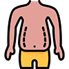

피부기초지식
Basic knowledges about your skin
Structure
Skin Structure
피부의 구조
-
피부를 안다는 것 - 피부 미인이 되는 지름길
외모도 경쟁력의 조건 중의 하나인 시대에 살면서 피부의 중요성을 인식하지 못하는 사람은 아무도 없을 것이다. 피부가 아름답지 못하면 아무리 멋지고 비싼 옷을 걸치든, 화장을 멋지게 하든 좋은 이미지를 남기지 못하기 때문에. 그러므로 피부에 대한 지식과 관심은 더 이상 특정한 전문인에게만 필요한게 아니다. 피부를 아는 것이야 말로 아름다운 피부 관리의 시작임을 명심하자!
-
피부란?
피부는 인체의 외부 표면을 덮고 있는 조직이다. 선물이 깨지거나 손상되는 것을 막기 위해 포장을 하는 것처럼, 피부 역시 외부의 자극과 변화로부터 우리 몸을 보호하는 대단히 막중한 역할을 하고 있다. 또한 우리가 아프다, 뜨겁다, 차다 등의 감각을 느낄 수 있는 것도 바로 피부 덕분이다. 가장 바깥에서 이런 역할들을 해 주므로 우리 신체 중에서 가장 많은 손상을 입고 노화도 빨리 시작된다.
-
피부의 구성은?
피부는 표피, 진피, 피하지방으로 구성되어 있습니다 라는 말은 많이 들어보았을 것이다. 그런데 도대체 이게 무슨 말일까? 피부는 외관상 단순해 보이지만 자세히 관찰해보면 다소 복잡한 구조로 되어 있다. 따라서 비슷비슷한 기능을 하는 조직별로 사람들이 쉽게 구분하기 위해 표피, 진피, 피하지방조직으로 나누고 있다는 것을 이해해야 한다.
-
표피
눈으로 보고 만질 수 있다.
사람들이 피부가 참 좋구나, 피부결이 매끄럽다고 하는 것은 바로 표피를 보고 하는 말이다. 눈으로 볼 수 있는 조직이므로 일차적으로 신경을 써야 한다. 표피는 피부의 가장 바깥조직으로 무핵층과 유핵층으로 구분되고, 대략 두께가 0.03mm~1mm로서 외부자극으로부터 최전방에서 피부를 지켜준다.
- 각질층
- 투명층
- 과립층
- 유극층
- 기저층
-
진피
주름과 탄력은 진피안에 있다.
진피는 진짜 피부라고 해서 붙여진 이름. 혈관, 신경, 피지선, 한선 등 피부의 중요한 부속기관이 모두 이곳에 주둔하고 있다. 실질적으로 여성들이 가장 싫어하는 주름이나 늘어진 피부는 바로 진피조직에 문제가 있기 때문이다. 진피는 표피 바로 맨밑층으로 두께는 0.7-4.0mm정도로 표피보다 몇 갑절이나 두꺼운 층으로 피부의 대부분을 차지하고 있다. 피부의 탄력과 영양을 관장한다.
- 유두층
- 망상층
-
피하지방 조직
적절한 피하지방은
탄력있고 아름다운 맵시를 위해 필요하다.지방을 많이 포함하고 있는 층으로 여성들은 대부분 뚱뚱해 보인다고 싫어하지만 여성 호르몬과 밀접한 관계를 유지하면서 여성의 몸매를 여성스럽게 만들어주는 조직이다. 또한 탄력이 좋아 충격을 완화하고 체온손실을 막아 보온효과도 발휘한다. 무리한 다이어트를 하거나 나이가 들게 되면 피하지방을 지지하고 있는 조직의 탄력성이 줄어들게 되면 피부처짐현상이 나타나기도 한다.
Action
Skin Action
피부의 작용
-
1. 각화작용
- 피부는 한달에 한 번 변한다.
- 표피조직을 구성하는 세포의 일생은 27+3일. 즉 기저층에서 태어난 세포가 각질층까지 올라갔다가 때나 비듬의 형태로 떨어져 나가는 것이 표피 세포의 인생이라는 말씀. 이러한 작용을 피부 미용에서는 “각화작용”이라고 한다. 각화작용이 잘되면 피부는 건강한 세포로만 구성되어, 그야말로 투명하고 반짝반짝 윤기 흐르는 피부가 된다.
-
2. 분비 작용
- 피부는 땀과 피지를 분비한다.
- 피부는 피지와 땀 두 가지를 내보내어 스스로 윤기있고 촉촉한 피부를 만들게 된다. 피지는 하루에 평균 1~2g 정도 분비된다. 분비된 땀과 피지가 섞여 피부 겉에 얇은 보호막을 형성하는데 이것을 피지막이라고 한다. 피지막은 피부를 촉촉하고 부드러운 상태로 유지시킬 뿐 아니라 중요한 역할을 한다. 또한 피부타입을 나누는 기준이 된다.
-
3. 보호 작용
- 최전방에서 인체를 지킨다.
- 피부가 하는 가장 기본적이고도 중요한 작용으로 물리적인 자극, 미생물, 자외선으로부터 신체 내부를 보호해 주는 역할을 한다. 물리적인 자극에 대해서는 각질층을 두텁게 하여 스스로를 보호한다. 또한 세균, 바이러스 등 미생물로부터 스스로를 보호하는 작용을 한다. 피부의 멜라닌 색소막은 커튼과 같은 작용을 해 파괴력이 강한 자외선이 피부 내부로 침투되는 것을 막는다.
-
4. 흡수 작용
- 피부도 먹는다.
- 피부는 본래 외부의 유해물질로부터 신체내부를 보호하는 임무가 먼저이다. 하지만 많은 양은 아니지만 필요하고 부족한 유효성분에 대해서는 모공 등을 통해 흡수할 줄도 안다. 만약 이러한 기능이 없다면 우리가 매일 정성스럽게 바르는 화장품은 모두 헛수고였을 것이다. 그러나 모공 속에 피지나 노폐물, 각질들이 쌓이게 되거나 피부가 자신과는 다르다고 여겨지는 것에 대해서는 흡수가 이루어지지 않게 된다.
-
5. 항체 형성 작용
- 피부도 알고보면 까다롭다.
- 피부는 외부로부터 자신과 다른 특정물질이 들어오게 되면 적군이 침입하면 아군을 배치하는 것처럼 항체를 형성하게 된다. 이러한 피부의 항체 형성 작용은 선천적인 원인에 의해서 일어나기도 하고 후천적인 원인에 의해서 일어나기도 한다. 가끔 화장품을 사용했을 때 피부 클레임이 발생하는 경우가 있는데 단순 자극 반응이 거의 대부분이나 피부내에서 항체가 형성되어 발생되는 경우도 있다.
-
6. 체온 조절 작용
- 피부는 자동 온도조절 시스템이다.
- 피부는 자동으로 체온을 조절하는 기능을 갖고 있어 항상 일정한 온도를 유지할 수 있게 한다. 특히 땀 분비는 피부에서 중요한 체온 조절 기능을 한다. 주위의 온도가 내려가면 피부는 체내의 열발산을 막기 위해 모공을 수축하게 된다. 반대로 주위의 온도가 높아지면 피부에서는 열을 발산하기 위해 땀을 분비하고 피부의 모든 구멍을 확장시킨다.
-
7. 호흡 작용
- 피부도 숨을 쉰다.
- 피부는 폐호흡의 1~2% 를 담당하고 있다. 그러므로 화장품을 사용할 때 피부 호흡을 방해할 수 있는 진한 메이크업은 가능한한 피하는 것이 좋다.
-
8. 비타민 d 합성 작용
- 피부에서 비타민 d가 만들어진다.
- 우리 몸에 반드시 필요한 비타민이면서도 섭취한 음식물로는 만들어지지 않는 비타민이 있다. 바로 비타민 d. 비타민 d는 음식물이 아니라 햇빛에 의해서 만들어지는 특이한 비타민이다. 자외선을 받으면 피부는, 피부를 둘러싸고 있는 피지 성분 중 에르고스테롤을 비타민 d로 전환시킨다. 비타민 d는 칼슘과 인의 흡수를 촉진하며 결핍시 구루병에 걸리게 되므로 없어서는 안되는 성분이다.
-
9. 감각 작용
- 피부는 모든 것을 느낄 수 있다.
- 피부는 외부의 자극을 즉각 뇌에 전달하며 톡각, 압각, 통각, 냉각, 온각, 소양감 등의 감각 작용을 담당한다.
-
10. 표현 작용
- 피부는 건강의 거울이다.
- 피부는 건강 상태나 심리 상태를 나타내는 거울이다. 수줍을 때 피부색이 붉어진다거나 아플 때 얼굴색이 나빠지는 것 등이 표현작용의 한 예이다.